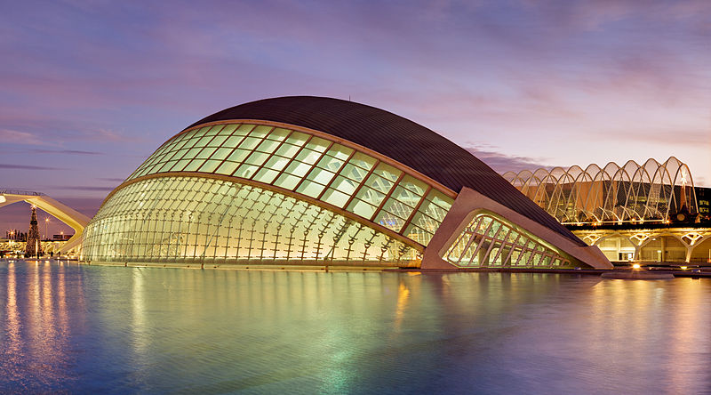

|
Coridele Ibiza Tenerife Madrid Barcelona Bilbao Valencia |
ValenciaValencia se afla pe coasta de est a Spaniei, pe malul drept raului Turia, la 351 km sud-est de Madrid si 361 km sud-vest de Barcelona. Al treilea oras ca marime din tara, Valencia este si un important centru universitar, industrial, comercial si turistic. Centrul istoric este foarte pitoresc, cu strazi inguste si biserici cu domuri albastre, iar cartierul nou impresioneaza prin bulevardele late strajuite de copaci inalti. Printre cele mai interesante atractii din Valencia se numara Catedrala,
Turnurile Serranos si Quart, ce au facut parte din zidurile de aparare, Palatul Marchizului Dos Aguas, complexul ultramodern Ciudad de las Artes y las Ciencias, Gradina Botanica, Piata Centrala, plajele si festivitatile din timpul sarbatorii lui San José, Fallas de Valencia. Viata de noapte valenciana este renumita - barurile si cluburile boeme sunt concentrate in cartierul Carmen,
Situat printre portocali si campuri de orez, Valencia are reputatia unei destinatii romantice, lucru ce poate fi justificat daca privim trecutul glorios al orasului. Astazi, vestigiile istorice sunt ascunse printre cladiri moderne sau monotone. Cu toate acestea, orasul natal al scriitorului Vicente Blasco Ibáñez si-a pastrat valorile culturale. Orasul a inceput ca asezare greceasca, ajungand apoi pe mainile cartaginezilor. In secolul II i.e.n. a devenit colonia romana Valentia; au urmat conducerea vizigota in 413 si cea maura in 714. Dupa caderea Califatului Cordobei, Valencia a devenit regat independent, fiind insa cucerit in 1092 de almoravizi. Sub conducerea lui Mohammed ibn Said orasul a devenit capitala regatului maur, pana in 1238, cand a fost cucerit de Jaime I al Aragonului. In timpul Razboiului Civil spaniol Valencia a fost sediul guvernului republican, fiind ultima fortareata ce a cazut in mainile lui Franco. |
 iar viata studenteasca se desfasoara in zonele Blasco Ibáñez si Benimaclet, pentru noptile de weekend fiind preferate Cánovas si Joan Llorens.
iar viata studenteasca se desfasoara in zonele Blasco Ibáñez si Benimaclet, pentru noptile de weekend fiind preferate Cánovas si Joan Llorens.